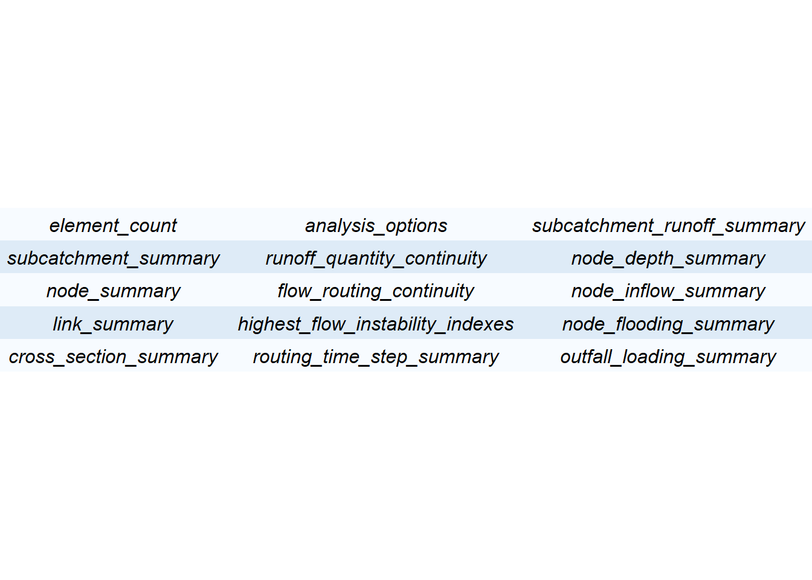
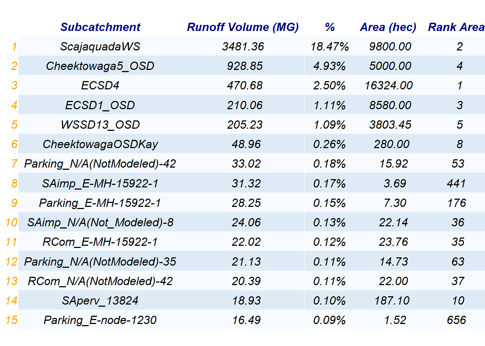
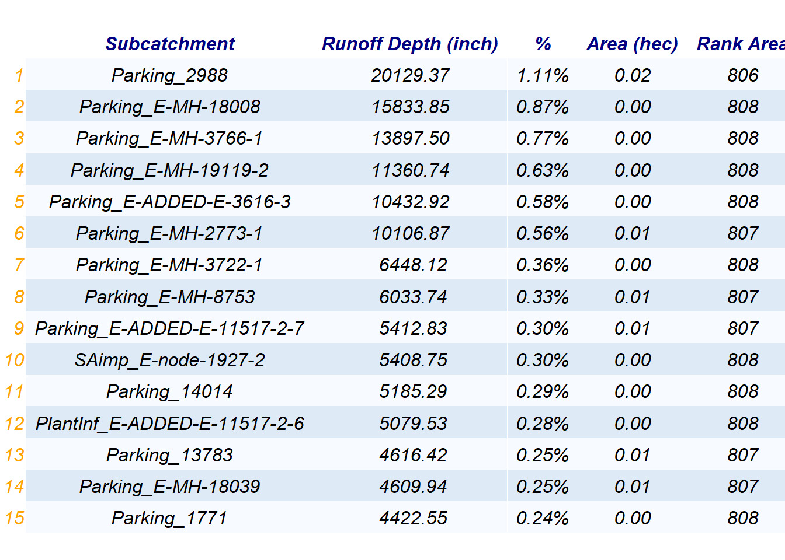
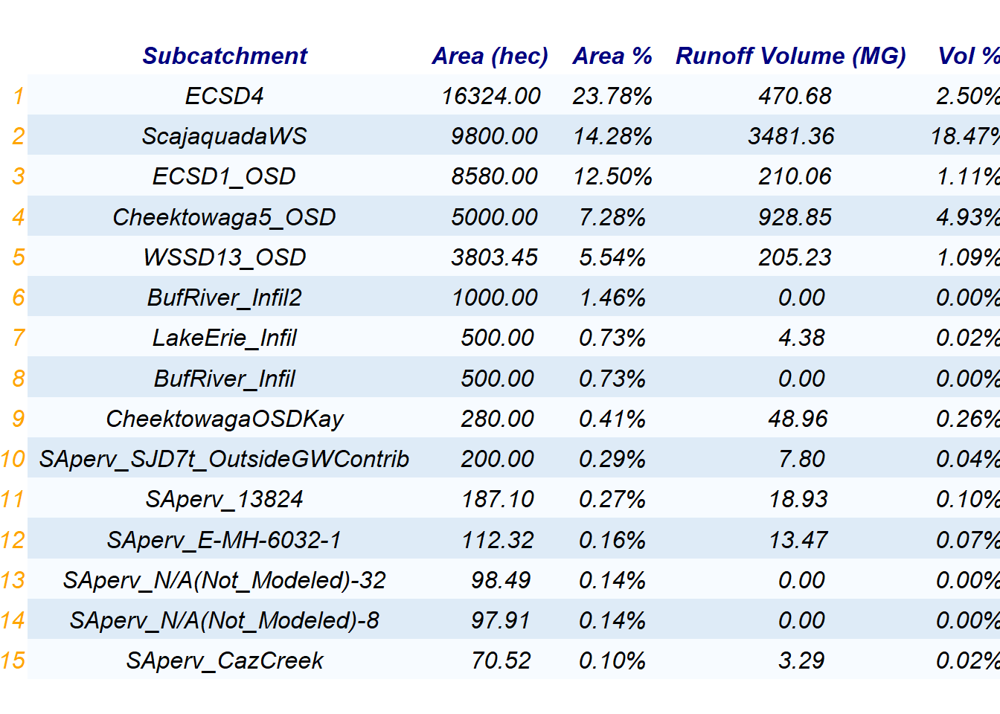

This project provides documentation for the analysis of an anonymous city sewer collection system. The purpose of this report is to provide the interpretation of SWMM output files.
EPA’s Stormwater Management Model (SWMM) is used for single event or long-term simulations of water runoff quantity and quality in primarily urban areas–although there are also many applications that can be used for drainage systems in non-urban areas. It is used throughout the world for planning, analysis, and design related to stormwater runoff, combined and sanitary sewers, and other drainage systems.
The SWMM output would be made in two files. The first one is a report file (“.rpt”) which includes all the cumulative results from the simulation model such as runoff and outfall loading summary. The second one is a binary file (“.out”) which include the time series analysis of different elements of the model like subcatchments, nodes and links. Usually researchers use SWMM software interface to analyze the time series result, which is stored in the binary file. However, in this report the analysis would be done using R. As a result, the simulation model results would be analyzed and showed in two separated parts. It should be noted that to get the output files, the input file was run manually through the SWMM model interface.
The report file which would be used as a data set in this project, has been uploaded in github. This file shows the SWMM output as a report file.
With the following lines of R code, the input file could be readable. The first line, would download the data set from github. I made this line as a comment. Because just for the first time it is needed to be downloaded. The rest of the time, the file is in the current folder and can be read easily. Therefore, it is not needed to download it again. For the users who want to run this model for the first time, they should run this line (remove the #)
# download.file("https://raw.githubusercontent.com/AdamWilsonLabEDU/geo503-2018-finalproject-HamedGhodsi90/master/data/SWMMReportFile.rpt", "Report_file.rpt")
report_file <- read_rpt ("Report_file.rpt")The report file has different sections which are:

The two most important sections, which have to be analyzed in the stormwater management process, are subcatchments and outfalls.
Number of subcatchments in the watershed: 59655
The subcatchments have been arranged based on total runoff volume, total runoff depth, and area which the top ones are shown in the following tables.
  
Knowing the subcatchments with the high value of total runoff and total depth would help the managers to understand the watershed in a better way. For example in order to decrease the runoff volume, low impact developments (LID) could be utilized. TO implement the LIDs, these selected subcatchments could have more priority.
by looking at the the subcatchments’s area, it could be realized that The first 5 subcatchments’ area are much higher than the rest ones. These subcatchments are the watershed upsream areas, which act as boudary conditions. These subcatchments are:
ECSD4, ScajaquadaWS, ECSD1_OSD, Cheektowaga5_OSD, and WSSD13_OSD.
Each subcatchment was named based on a critera which are:
Cheektowaga5: inflow from outside sewer district (OSD) (1 subcatchment)
ECSD1: inflow from outside sewer district (OSD) (1 subcatchment)
ECSD4: inflow from outside sewer district (OSD) (1 subcatchment)
WSSD13: inflow from outside sewer district (OSD) (1 subcatchment)
DetBasin: detention basin (1 subcatchment)
PlantInf: green infrastructure project (infiltration planters) (2 subcatchments)
RainGardens: green infrastructure project (rain gardens) (8 subcatchments)
Buf1: House Buffer Area (type 1, disconnected downspouts) (4830 subcatchments)
Buf2: House Buffer Area (type 2, all other areas) (4846 subcatchments)
GLawn: Lawn (3963 subcatchments)
HDC: Roofs DC (4686 subcatchments)
HLawn: Roofs to Lawn (4568 subcatchments)
HSplash: Roofs Splashing (impervious component) and House Buffer Area Splashing (pervious component) (4690 subcatchments)
HStreet: Roofs to Street (1747 subcatchments)
Hstreet: Street (1397 subcatchments)
Lat: Lateral Area (4689 subcatchments)
Main:Mains Area (5102 subcatchments)
Parking: Commercial Parking Lots (2681 subcatchments)
RCom: Roofs Commercial (3297 subcatchments)
SAimp: impervious subarea (6374 subcatchments)
SAperv: pervious subarea (6764 subcatchments)